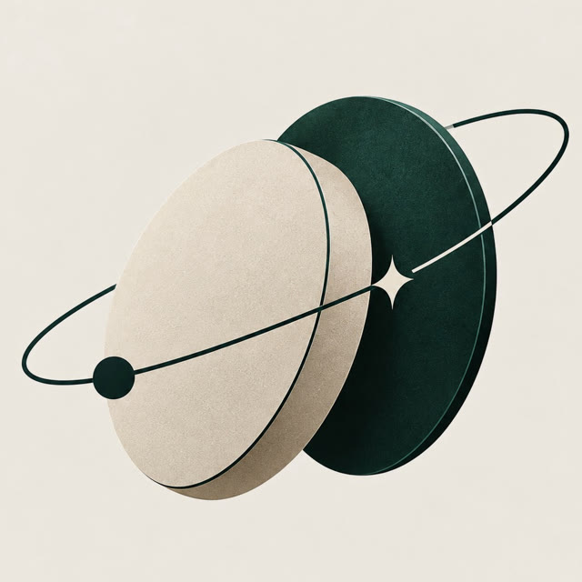

Single point of control
One compromised or unavailable key can block or move the treasury.

HackMeridian 2026 · Genesis · Stellar ComposedInternal controls for digital treasuries
Arqueo makes a Stellar smart account enforce the treasury's payment policy.
The problem
One person holds the key. Approvals happen in chat. Auditors piece together screenshots.
One compromised or unavailable key can block or move the treasury.
Payment limits and approvals are often a process, not an enforceable control.
Reviewers receive chat history and screenshots instead of a consistent payment record.
The product
Arqueo creates named rules on a smart account. Each rule defines who signs and which account policies must pass.
Authorized supplier, per-payment maximum, and a 30-day spending policy.
A second signature is required by the account's large-payment rule.
The admin passkey creates the account and authorizes its rule changes.
Payment path
Testnet evidence
The same large payment fails under the ordinary rule and succeeds under the large rule.
Employee · ordinary · accepted
Testnet payment recorded at ledger 5,385,825.
Employee only · rejected
Per-payment control returned error 2.
Accepted transaction: 03784fdb…63f711d2 ↗
Built on Stellar
Arqueo composes infrastructure that already exists with a policy contract built for treasury controls.
Testnet · Soroban · native XLM Asset Contract
smart-account-kit
OpenZeppelin rules and policies
custom control-policy
Evidence for the auditor
The read-only journal shows amount, recipient, concept, date, status, signers, rule, and a Stellar Expert link for settled payments.
A safer way to pay from a shared treasury
Arqueo is an early testnet MVP for small businesses, startups, and associations that need shared control over digital-asset payments.
Arqueo · Testnet only